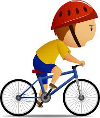

To ποδήλατο
Ορισμένα χρήσιμα πράγματα που θα πρέπει να γνωρίζει κάποιος που έχει ένα ποδήλατο είναι:
- Να ξέρει ισοροπία
- Να ξέρει να κάνει πετάλι
- Να έχει τρόμπα για να φουσκώνει τα λάστιχα
- Να φοράει κράνος
- Να επισκευάζει το ποδήλατο
- Να καθαρίζει το ποδήλατο τακτικά κ.α.
Από όλα αυτά ποιά θα ήταν πραγματικά χρήσιμα όταν κάνεις ποδήλατο? Ποια είναι τα πιο κύρια?
Τα πιο κύρια είναι:
- να ξέρει ισσοροπία
- να ξέρει να κάνει πετάλι
- και φυσικά να φοράει κράνος για ασφάλεια!
Τα υπόλοιπα (ενώ καλό ειναι να τα ξέρει κάποιος), δεν χρειάζονται όταν κάνεις ποδήλατο
Tα αφαιρούμε και κρατάμε τα σημαντικά.Mε αυτό το τρόπο πετυχαίνουμε να κάνουμε τη δουλεία μας πιο εύκολα και πιο γρήγορα
Έτσι κάνουμε ένα πρόβλημα λιγοτερο πολύπλοκο και αυξάνουμε έτσι την αποδοτικότητα μας